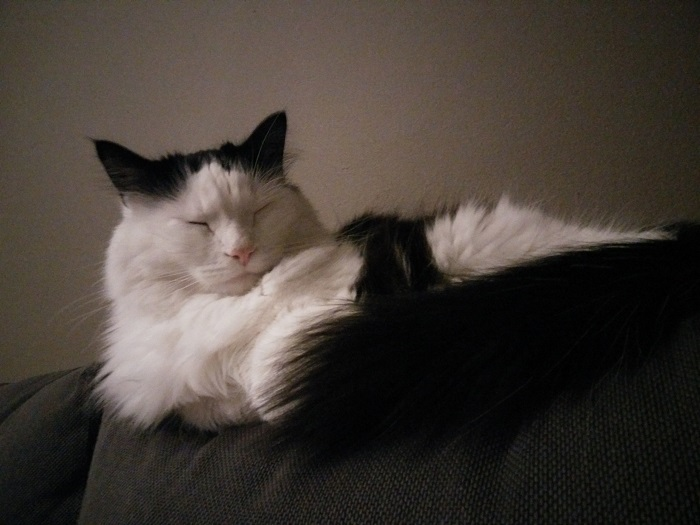

Napping
Phileas spends most of his day napping. This is our couch from Ikea, it's called a Yorgsbörg or something.
This is my cat Phileas. He is an adorable demon. As a cat, he is entirely useless, but here are the things that he does:
Phileas spends most of his day napping. This is our couch from Ikea, it's called a Yorgsbörg or something.
When he isn't napping he usually just finds somewhere to stare at you.
Sometimes a nap isn't good enough and he actually falls into a deep sleep.
This is what he looks like when he remembers that time you snuck in a quick belly rub without asking.
He also likes to yawn to let you know how boring you are.
And lastly he likes to make sure he finds a comfortable place to sit that also inconveniences you.